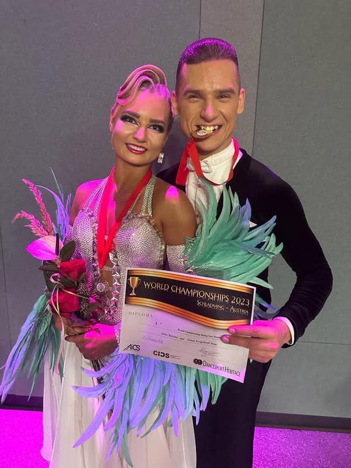
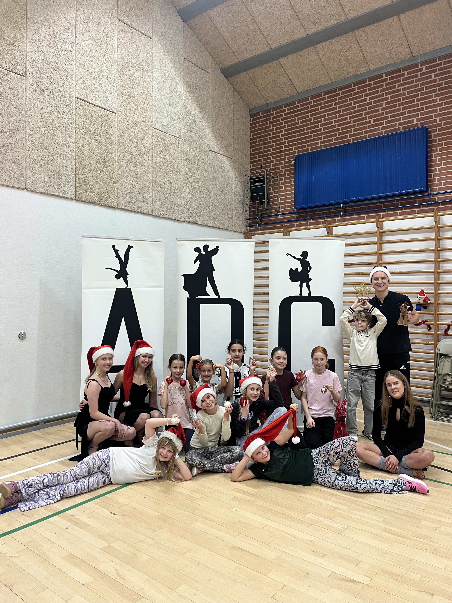
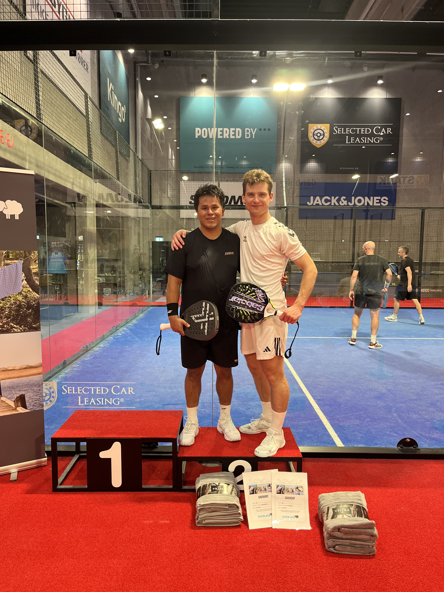

Dance
I became the Rising Stars Standard World Champion in 2023 and have taught dancing in Latvia, Denmark, Canada and the USA.

About Me
My name is Gints Berzins. I am originally from Riga, Latvia, and I have lived in Denmark since 2018. I am currently studying Software Technology Engineering at VIA University College.
Before beginning my software engineering journey, I spent more than 20 years in competitive ballroom and Latin dancing. That experience taught me discipline, resilience and how to work consistently towards long-term goals.
I became the Rising Stars Standard World Champion in 2023 and have taught dancing in Latvia, Denmark, Canada and the USA.
I am developing my skills in programming, web development, problem-solving and software design.

